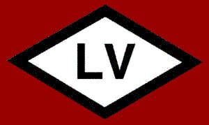
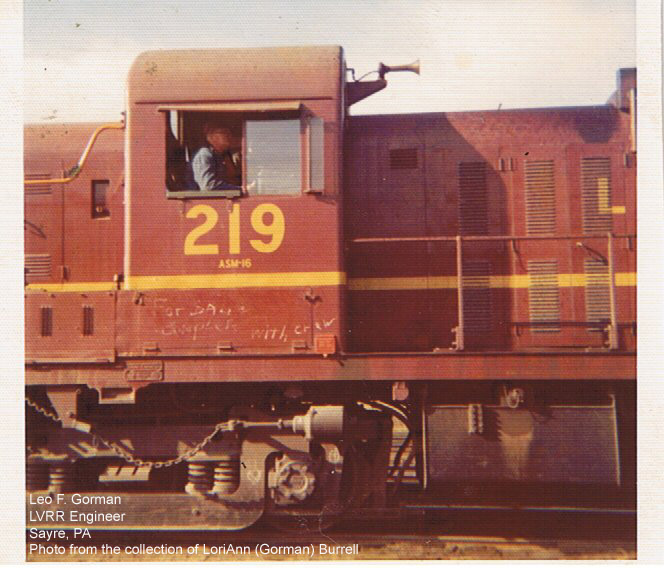
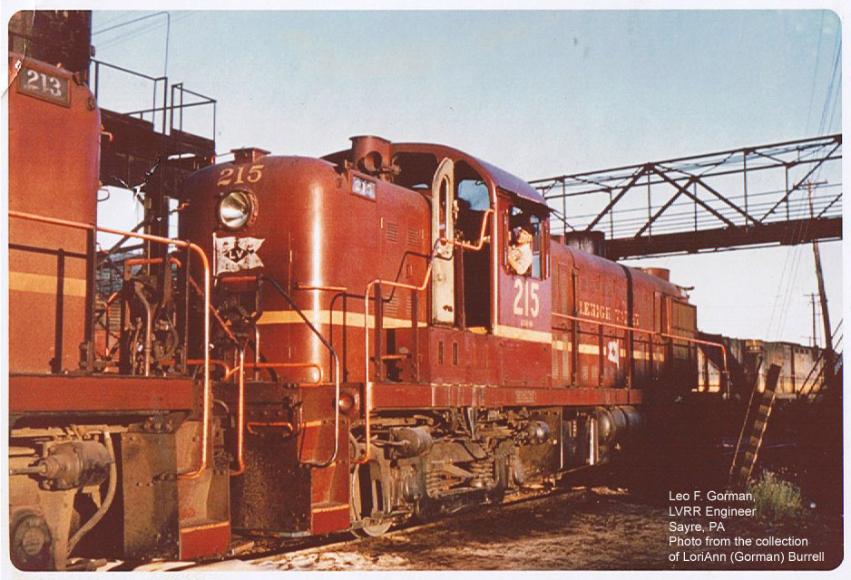
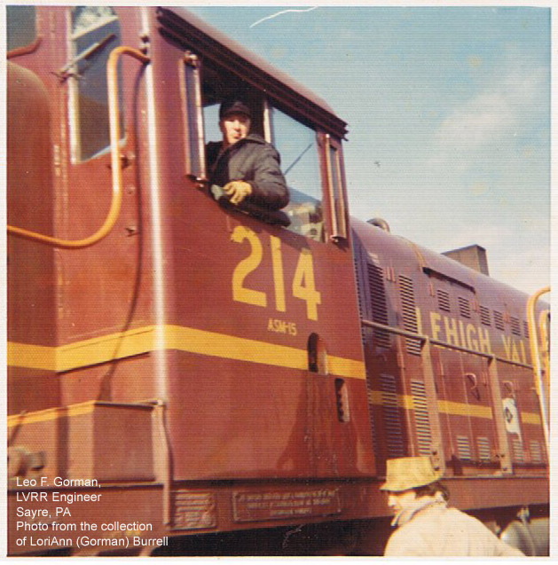
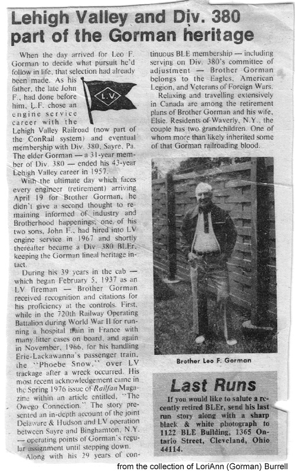

| I received the following
photos and newspaper article from LoriAnn (Gorman) Burrell, granddaughter
of LV Engineer Leo F. Gorman, and daughter of LV Engineer John F. Gorman.
She wanted to share these photos of her Grandfather with other LV fans, in memory of him. Here of some photos of Leo
F. Gorman, taken in Sayre, PA, and an article about his career with the
Railroad.



 photos copyright © LoriAnn Burrell
|